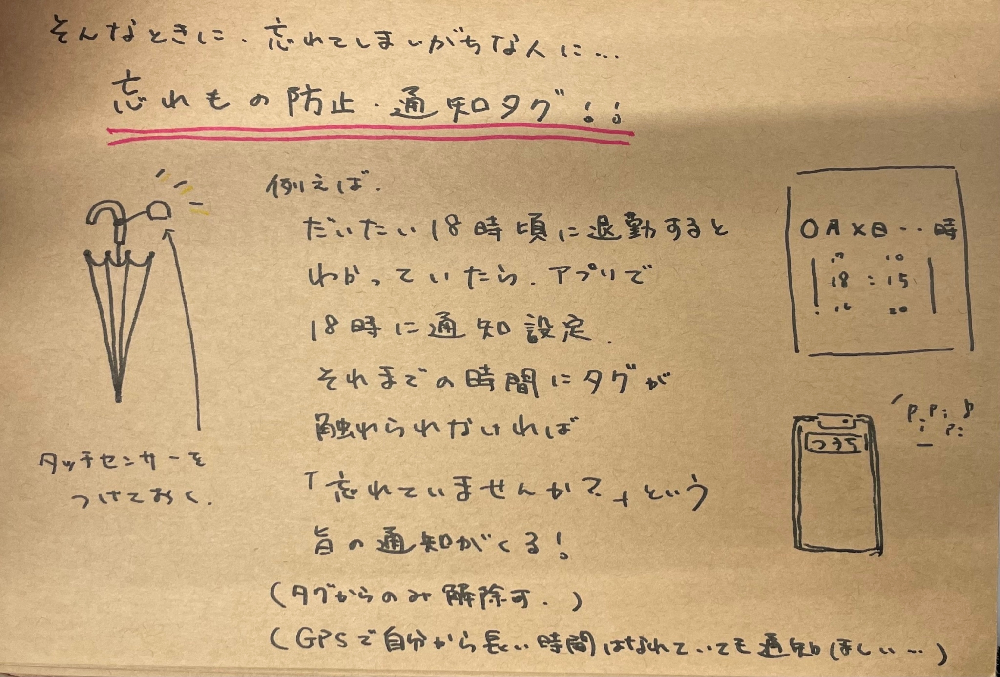
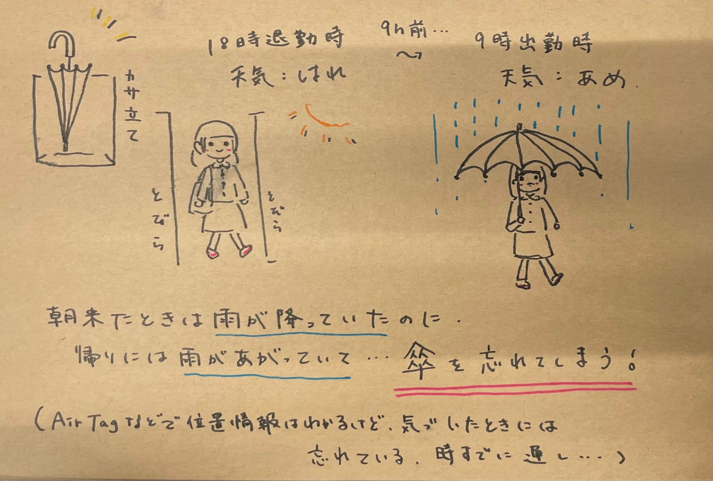

↑Drawn by イシズカアヤネ
持っていかないといけないものを忘れないように事前に持ち物を設定し、
忘れている場合は、知らせてくれるリマインダーと持っていったことをチェックするタグです。
無くしたものを見つける製品はいくつもありますが、持ち物を忘れたか知らせてくれる製品はなかなかなく、
立案者の石塚も含め、忘れ物の多いメンバーならでばの製品だと思います。
複雑なものではないのですが、いろいろなものを持ち歩く現代人にとっては、とても便利だと思います。
（というか、持ち物ほぼ忘れる僕にとっては、喉から手が出るほど欲しい…）